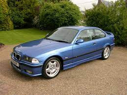

BMW m3 e46
BMW 3-ї серії (E46) - четверте покоління легкових автомобілів 3-ї серії німецького автоконцерну BMW, яке випускалося з 1997 по 2006 рік. Широка гама двигунів, п'ять типів кузовів на вибір плюс спортивні версії визначили успіх цього покоління. Всього було виготовлено 3266885 автомобілів, найбільше в одній серії в історії BMW.
Данна модель авто получила свою популярність в 2005р. під час виходу гри need for speed most wanted де вона була головною тачкою в грію